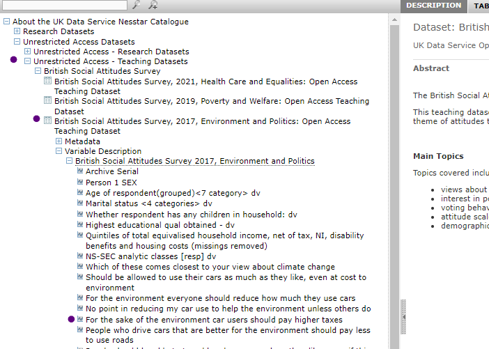
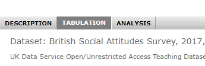
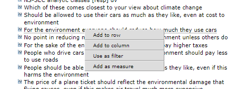

Activity: Explore survey data in Nesstar
Nesstar is an online tool for browsing some of the survey data from the UK Data Service. In this activity, you will use Nesstar to explore the British Public’s views of the following statement.
For the sake of the environment car users should pay higher taxes.
The aim of the activity is to get more familiar with the characteristics of survey data and some of the survey data available from the UK Data Service.
Task 1: what percentage of the British Public agreed with the statement?
Navigate to the UK Data Service Nesstar catalogue.
The datasets are listed in left-handed menu in three sections: Research Datasets, Unrestricted Access Datasets, and Teaching datasets.
Click on Unrestricted Access Datasets (or expand with the +). Unrestricted access means you do not need to register to access these datasets.
Click on Unrestricted Access - Teaching Datasets (click or expand with +).
Find and select British Social Attitudes Survey (click or expand with +).
Find and Select British Social Attitudes Survey, 2017, Environment and Politics: Open Access Teaching Dataset. .
Find the relevant variable in the left menu: select Variable Description, then the survey name. You should now see a list of variables, select the one headed ‘For the sake of the environment car users should pay higher taxes’.

Review the bar chart and percentages in the right pane.
What percentage of the British Public agree?
3.4 percent responded agree strongly and 24.1 percent said agree.
Note: This dataset contains an extract of data from the 2017 British Social Attitudes survey. The full dataset contains many more variables. This version has an open license, which means it can be used without needing to register and sign-in.
Task 2: How do responses vary by level of education?
Now, use NESSTAR to make a table to compare responses by level of education.
Steps
In NESSTAR, select the tabulation option above the main right pane. 
In the left menu, click on the same variable you explored above. A menu should appear, giving you options to add the variable to a table. Using the menu, select Add to row. 
Next, select the variable Highest educational qual obtained - dv. A menu should appear, giving you options to add the variable to a table, select Add to Column.
In the right pane, you should now see a table with responses by education level. You can use this table to compare how responses vary by level of education.
What percent of those with a degree agree?
How does it vary from those without a degree?
6.4 agree strongly and 41.7 agree strongly.
These values are higher than those for other categories.